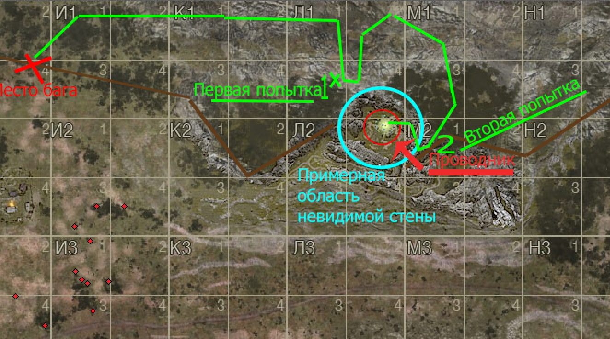

Любеч.2011.Дух приключений.
Первое достижение Zero-Squad из древнейшей эры
Как известно, Zero-Squad отличается бесконечным и безграничным стремлением вперёд, а также постановкой заоблачных и зачастую невыполнимых целей. Всегда ли так было? С чего же всё это началось? Начнём наш экскурс в далёкое прошлое...
2011 год. sZone online(stalker online). Любеч(лес).
На просторах аномальной зоны игры sZone выжить в одиночку в те времена было довольно сложно, а раскрутиться еще сложнее... Поэтому игроки создавали группировки и крупные альянсы, но некоторые и зачастую опытнейшие из них объединялись в маленькие группы. Одной из таких групп был дуэт одиночек LORD_Ivan(Zero) и Hunter_11(ZzzPirate), который зародился 31 декабря 2010 года, когда оба этих сталкера вступили в группировку, название которой уже никто и не вспомнит. На следующий день они покинули её, решив, что мобильная группа из двух человек более эффективна, а войны между группировками съедают много денег( на самом деле их просто выгнали, потому что во время дороги к месту, где проходила осада территории врежеской группировки, они увидели артефакт, который безуспешно пытались достать в течении длительного времени, из-за чего и опоздали на захват. А прийдя на него, не принесли почти никакой пользы)
В один из серых, ничем не примечательных дней, в голову наших героев пришла навязчивая идея: попытаться проникнуть на территорию, где находилась аномалия "Проводник" в которой спавнился одноименный артефакт. Загвоздка была в том, что локация являлась закрытой, т.к. разработчики не успели её доработать. Закрытые локации они зачем-то вводили в игру, но при этом ограждали их непроходимой невидимой стеной(гении блять).
Локация была расположена на пересечении квадратов Л2 и Л1. Недалеко от краёв карты проходил забор, обозначающий её границы, но на самом деле за ним карта еще продолжалась, просто там не было ничего, кроме почти голых текстур. Изредка за этот забор можно было выбраться путём обнаружения подходящих мест для юзания багов. Одно из таких мест и было найдено Zero, который после обнаружения этого места быстро рассказал о нём ZzzPirate, после чего в их головах проскользнула мысль, что если это находится наделеко от Проводника, то может в том месте за пределами играбельной карты где-то есть и проход на закрытую локацию? После этого, дух приключений повёл наш дуэт в это путешествие.
Если вы думаете, что ребята провели часок-другой за этим занятием, то вы сильно заблуждаетесь, ведь они провели за пределами карты несколько дней. Сначала они встретили на своём пути первую преграду: смертоносный зелёный туман, который также являлся любимой игрушкой разрабов по закрытию недоделанных мест. Видимо, они предполагали, что в заборе могут быть дыры и кто-то попробует двинуть к Проводнику, а этот туман его наверняка остановит. Так оно и случилось... Сначала ребята знатно приуныли, но тем не менее попытались преодолеть туман. После долгих попыток они смогли найти в нём дыры и продвигались всё дальше и дальше, метр за метром, на ощупь. Туман убивал не сразу, он делал это за 2 секунды, двумя ударами на 50% хп. Но в некоторых точках он урон почему-то не наносил, через такие безопасные зоны они и продвигались. Но в итоге так и не смогли преодолеть туман.
После этого Zero и ZzzPirate не отчаялись и пошли опять по краю пути, дальше к правой части карты, чтобы попробовать пройти туман с другой стороны. И им это удалось, предприняв в другом месте вторую попытку преодоления тумана, они смогли пройти внутрь и залезли на горы, окружавшие аномалию. Там они встретили невидимую стену и поняли, что уже почти достигли цели. Но расслабляться было рано, ведь невидимая стена, уходящая в бескончную высь к небу этого виртуального мира, была полностью непреодолима везде, где они встречали её до этого дня. Путём огромных затрат времени наши герои всё-таки прорвались сквозь эту стену, используя множество багов.
Так, спустя несколько дней попыток и поисков, наш дуэт совершил невозможное, достиг места, на которое не должна была ступить нога ни одного игрока. И, к счастью, там спавнился артефакт, которому локация и была посвящена. Артефакт появлялся там раз в 6 часов и ZzzPirate оставил своего персонажа в том месте, чтобы узнать точное время спавна.
После добычи первого артефакта, герои рассказа смогли довольно дорого его продать, ведь это был первый артефакт такого рода во всей Зоне. Проделали они эту операцию еще несколько раз, но тучи сгущались... Резко и внезапно ZzzPirate уехал в летний лагерь и оставил своего персонажа на аномалии, а по приезду получил бан.
Вот и сказочке конец...Хотелось бы так сказать, но история закончена на этом не была. Наши герои не любили отступать и ZzzPirate создал новый аккаунт и решил продавать информацию о том, как пройти на эту локацию другим игрокам.В итоге он этим и занимался еще длительное время, подкидывая переодически 20-30% от сделок напарнику, который был очень ленив и забил хуй на всё, но ZzzPirate был всё же ответственным человеком и помнил, что совершил он этот подвиг, достойный легенд, не в одиночку.
А теперь рассказ действительно подходит к концу. Это был первый подвиг в списке Zero-Squad'a. В далёком 2011-м году двое школьников, не теряя надежды, день изо дня пытались достичь невозможного, игнорируя законы логики, которые велели им бросить эту затею. И в итоге они смогли, доказав всему миру и самим себе, что Zero-Squad может дотянуться даже до звёзд!